Rochester Quadrajet Model 4MV Carburetor · 23-07-03
Performance Adjustments
The following carburetor adjustments are described and illustrated in Part 23-01:
Idle Speed and Fuel Mixture Fast Idle Speed Anti-Stall Dashpot
To enable the vehicle to operate within the range of Government regulations to control engine emissions, the specifications for the adjustments were determined to help provide the most desirable engine performance characteristics. These specifications are contained in Part 23-01, and are arranged in chart form for ready reference.
The adjustment and repair procedures described in this part are performed less frequently, and are unique to the Rochester Model 4MV carburetor. The specifications for these adjustments and other technical data are listed at the end of this Part.
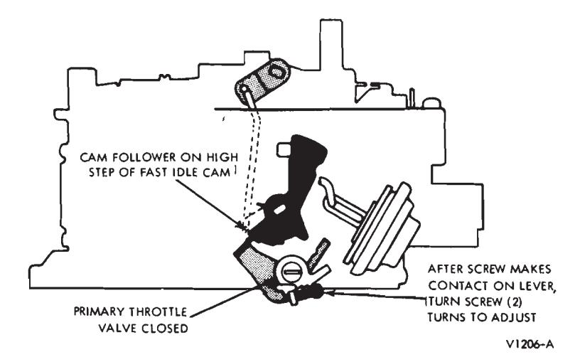
Fig. 3 — Fast Idle Adjustment
Choke ROD Adjustment
Place the fast idle cam follower on the highest step of the fast idle cam (Fig. 3). Back out the fast idle screw until the primary throttle plates are completely closed and the cam follower is away from highest step of the cam. Then turn the fast idle screw inward until the cam follower just con- tacts the highest step of the cam; from this point, turn the screw two more complete turns. This presets the fast idle screw so that the following choke settings can be made accurately.
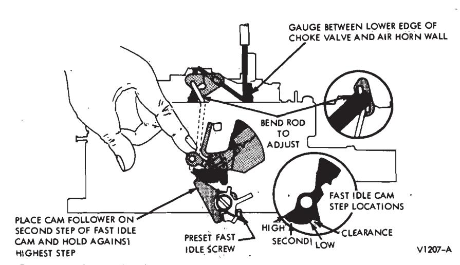
Fig. 4 — Choke Rod Adjustment
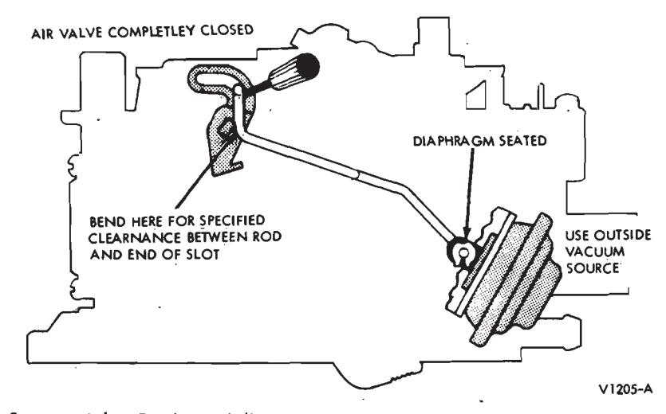
Fig. 5 — Air Valve Dashpot Adjustment
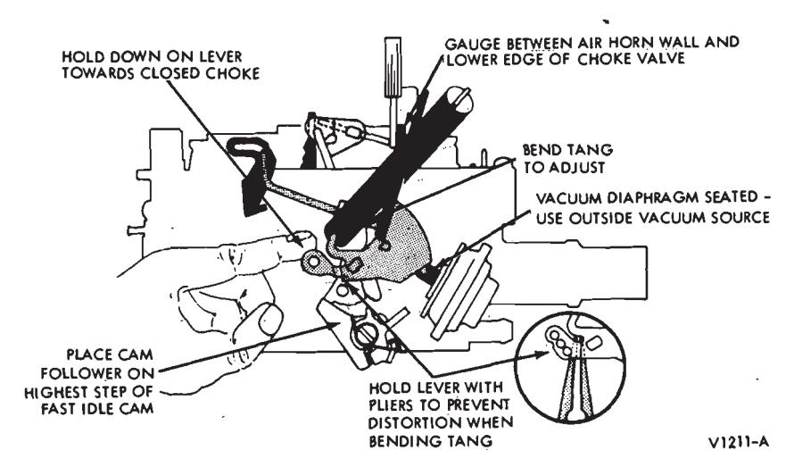
Fig. 6 — Vacuum Break Adjustment
With the fast idle adjustment made, place the fast idle cam follower on the second step of the fast idle cam and against the rise to the highest step (Fig. 4). Rotate the choke plate towards the closed choke position by pushing counterclockwise on the vacuum break lever.
Measure the dimension with a plug gauge between the lower edge of the choke plate, at the choke lever end and inside the air horn wall.
To adjust, bend the choke rod at the point shown in Fig. 4.
Adjust the fast idle speed to specifications.
AIR Valve Dashpot Adjustment
- Seat the vacuum break diaphragm, using an outside vacuum source (Fig. 5).
- With the air valve completely closed and the diaphragm seated, measure the clearance between the air valve dash pot rod and the air valve lever.
- The dimension should be as specified. If not, bend the rod at the air valve end to adjust.
Vacuum Break Adjustment
- Seat the vacuum break diaphragm using an outside vacuum source (Fig. 6).
- Place the cam follower on the highest step of the fast idle cam.
- Rotate the vacuum break lever counterclockwise toward the closed choke until the vacuum break tang contacts off-set in the vacuum break dash pot rod.
- With the choke rod in the bottom of the slot in the choke lever, measure the distance between the lower edge of the choke plate and inside the air horn wall (choke lever
- Bend the vacuum break tang to adjust.
Unloader (dechoke) Adjustment
-
Hold the choke plate in the closed position. This can be done by attaching a rubber band or spring to the vacuum break lever and a station- ary part of the carburetor.
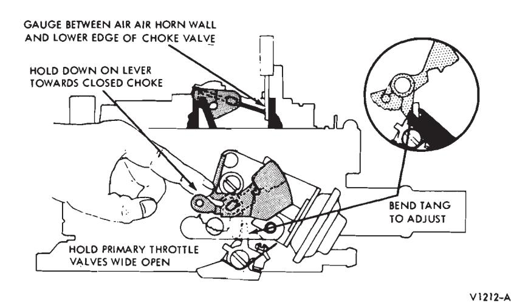
Fig. 7 — Unloader Adjustment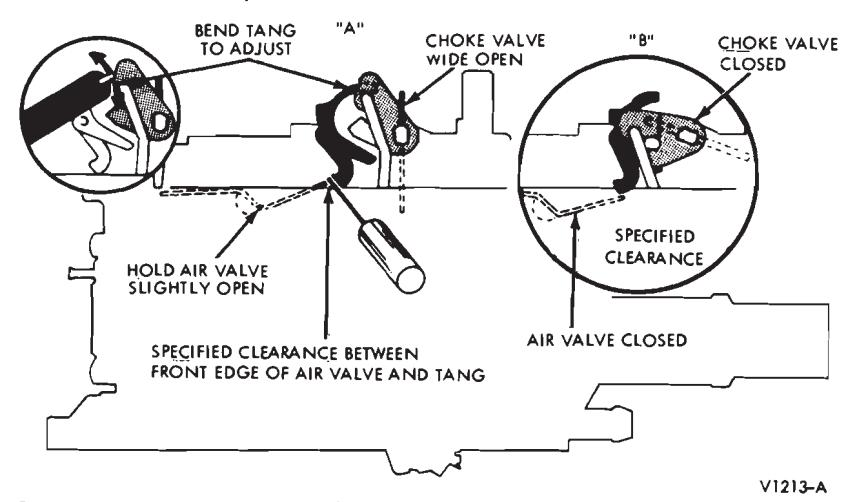
Fig. 8 — Air Valve Lockout Adjustment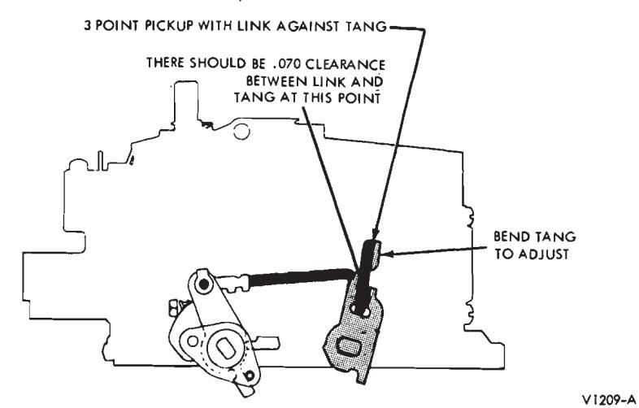
Fig. 9 — Secondary Throttle Opening Adjustment -
Open the primary throttle plates to the wide open position.
-
Insert the specified plug gauge between the lower edge of the choke plates and inside the air horn wall (Fig. 7). The choke rod should be in bottom of slot when checking setting.
-
To adjust, bend the tang on the fast idle lever to the rear to increase and to the front to decrease the clearance. It is advisable to recheck the unloader setting after the carburetor is installed on the engine by depressing the accelerator pedal.
AIR Valve Lockout Adjustment
-
Rotate the vacuum break lever clockwise until the choke plate is wide open (Fig. 8). The rod must be in the upper end of the slot.
-
Open the air valve slightly so that the edge of the air valve is opposite the tang on the lockout lever.
-
Measure the distance between the tang on the lockout lever and the edge of the air valve. Dimension should be as specified.
-
To adjust, bend the upper end of the lockout lever forward to increase and rearward to decrease the clearance.
Close the choke plate after adjustment to make sure the lower edge of the lockout lever clears the top edge of the air valve for proper locking during choke operation. If the lockout lever does not swing over the top edge of the air valve, make sure the air valve is properly seated. If it is not, file the top edge of the valve for clearance.
Secondary Throttle Opening Adjustment
For correct opening of the secondary throttle plates, the following adjustment should be checked:
Three Point Pick-Up
Open the primary throttle plates until the actuating link contacts the top of the tang on the secondary lever.
The three-point pick-up should have 0.070-inch clearance (Fig. 9).
Bend the tang on the secondary lever to adjust.
Secondary Throttle Closing Adjustment
To provide proper closing of the secondary throttle plates, the closing adjustment can be made as follows:
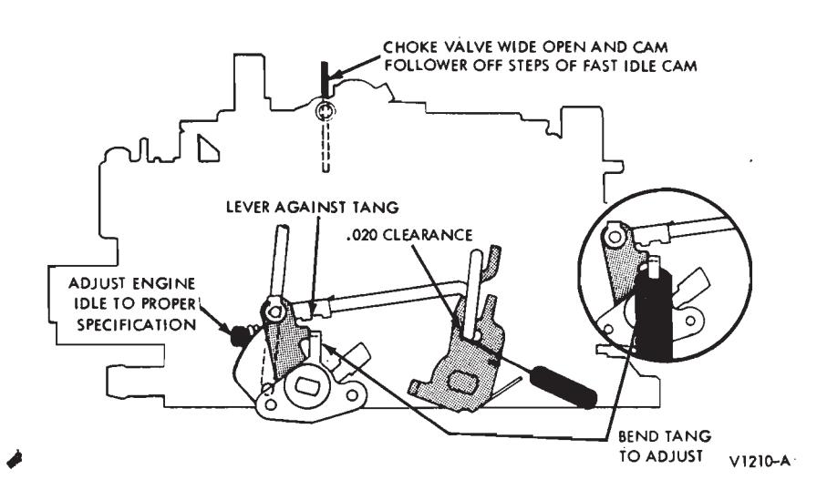
Fig. 10 — Secondary Throttle Closing Adjustment
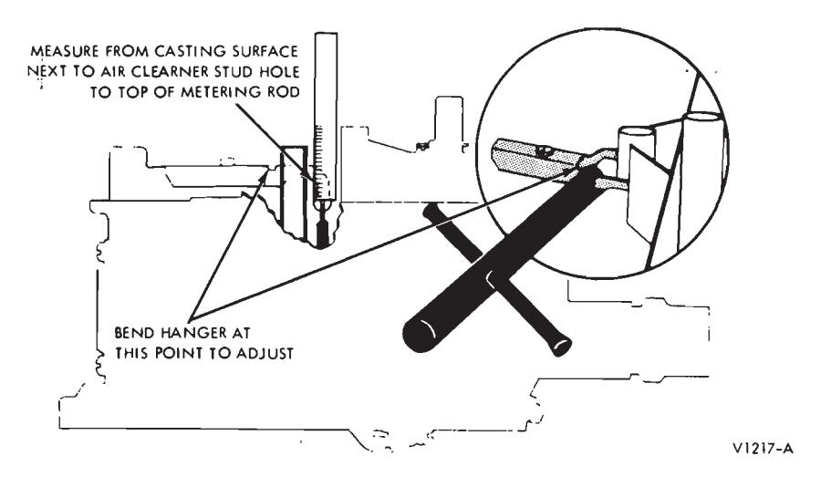
Fig. 11 — Secondary Metering Rod Adjustment
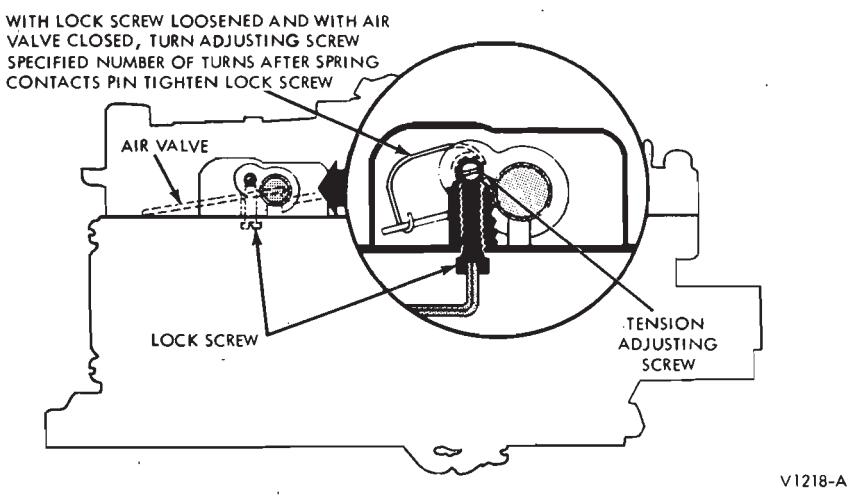
Fig. 12 — Air Valve Closing Spring Adjustment
- Turn the curb idle screw 1 1/2 turns in after it contacts the throttle lever. This is a preliminary adjustment only. Make sure cam follower is not resting on the fast idle cam.
- There should be 0.020-inch clearance between the actuating link and the front of the slot in the secondary lever when the tang of the actuating lever on the primary shaft is against the pin (Fig. 10).
- Bend the tang on the primary actuating lever to adjust.
Secondary Metering ROD Adjustment
Make Sure the Air Valves Are Completely Closed.
To check the secondary metering rod adjustment, measure from the top of the metering rod to the top of the air horn casting next to the air cleaner stud hole (Fig. 11). The dimension should be as specified.
To adjust, bend the metering rod hanger. Make sure both rods are adjusted to the same dimension.
AIR Valve Closing Spring Adjustment
To adjust the air valve spring wind-up, loosen the lockscrew (allen screw) and turn the spring fulcrum pin counterclockwise to remove all spring tension. With the air valve closed, turn the fulcrum pin clockwise the specified number of turns after the loop on the torsion spring contacts the pin on the shaft. Hold the adjusting screw in this position, tighten lockscrew (Fig. 12).
Choke Coil ROD Adjustment
Disconnect the choke coil rod from the vacuum break lever (Fig. 13). Rotate the vacuum break lever counterclockwise until the choke plate is completely closed.
To adjust the choke coil rod, push or pull the rod until it hits the stop in the choke coil housing. Then bend the rod so that it just fits into the hole in the vacuum break lever.
With the choke plate completely closed and the coil rod against the stop in the choke coil housing, the upper end of the rod should just enter the hole in the vacuum break lever. From this point, bend the coil rod (Fig. 13) so that it goes one diameter beyond the hole to give the choke plate extra closing pressure.
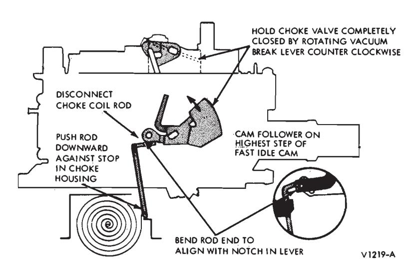
Fig. 13 — Choke Coil Rod Adjustment
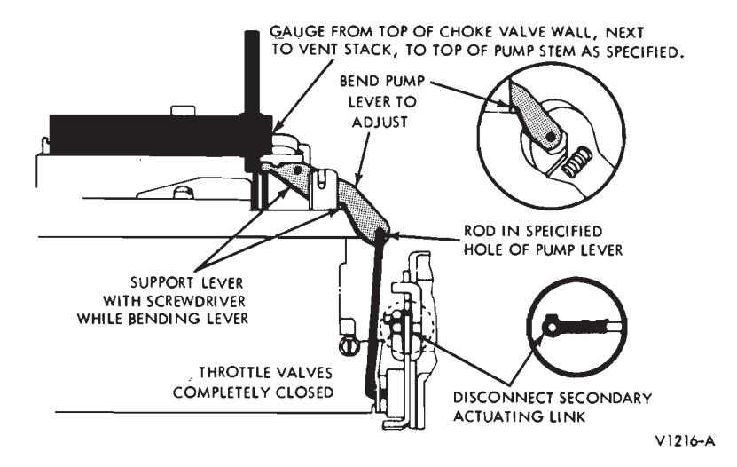
Fig. 14 — Pump Rod Adjustment
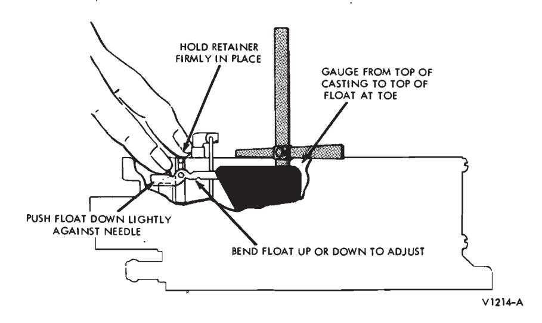
Fig. 15 — Adjusting Float Level
Pump ROD Adjustment
To check this adjustment the primary throttle plates must be completely closed. Back out the idle stop screw on the bowl from the stop tang on the throttle lever.
Bend the secondary throttle closing tang away from the primary lever.
With the throttle plates completely closed and the pump rod in the specified hole in the pump lever, measure the distance from the top of the choke plate wall, next to vent stack, to the top of the pump stem with an adjustable T-scale. The dimension should be as specified. Bend the pump lever as shown to adjust (Fig. 14).
Fuel Level Float Adjustment
-
Remove the air horn assembly (refer to Major Repair Operations).
-
With an adjustable T-scale, measure the distance from the top of the float bowl surface (gasket removed) to the top of the float at the toe (locate gauging point 1/16-inch back from the toe on the float surface). Do not gauge on top of part number.
When checking the adjustment make sure the float hinge pin is firmly seated and the float arm is held down against the float needle so that it is seated.
-
To adjust, bend the float pontoon up or down at the point shown in Fig. 15.
-
Install a new air horn gasket on the float bowl, then install the air horn.